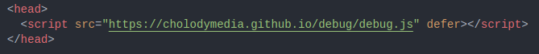

<script src="https://cholodymedia.github.io/debug/debug.js" defer></script> Copy Link
Copied
<script src="https://cholodymedia.github.io/debug/debug.js" defer></script> Copy Link
Copied
How to use?
How do I add it to my website?
Just copy the link above and paste it inside the head tag of your website
Start and Stop
Using button
Just click the tilde button (~) on your keyboard to make objects’ boundaries appear and disappear
Alternatively, here are the commands you can use:
To show boundaries type:
deb.show()
To hide them use:
deb.hide()
Try it out yourself, this site uses it too 😉